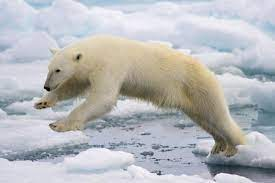
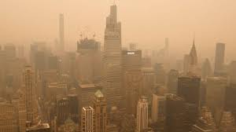

Importancia
Cuando entraste a esta pagina, muy probablemente fue por que te interesas,
por que te interesas en el cuidado del ambiente y sabes que es un tema muy importante para todos nosotros.
Tenemos mucha razon al preocuparnos por el ambiente, aunque no sean cambios que falcilmente puedas notar que son por la contaminacion
y el mal cuidado del ambiente, son solo analizarlo un momento, te vas a poder dar cuenta que muchas cosas no muy agradables que pasan en el planeta,
son a causa de la contaminacion, como:
| Suceso | Causa | Imagen |
|---|---|---|
| Deshielo de lo los polos | Cambio climatico |  |
| Cambio climatico | Contaminacion del aire |  |
| Principal riesgo ambiental en America | Contaminacion del aire |  |
| Islas de basura en el oceano | Contaminacion de los oceanos |  |